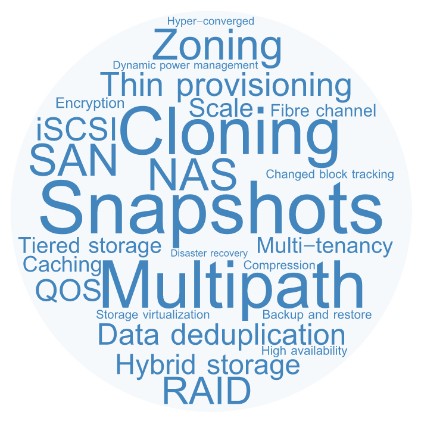

All your storage
are belong to Ansible

Adam Litke - alitke@redhat.com
Senior Software Engineer - Red Hat
August Penguin - 7.9.2017
Enterprise Storage

Enterprise Storage
Enterprise Storage
Screenshots of APIsWe can make this better
- What?
- Vendor-neutral automation
- Efficient control plan operations
- Who?
- IT Operations / DevOps
- Virtualization
- Container orchestration
Been there, Done that
- What about cinder?
- ✔Mature and stable
- ✔Broad vendor support
- ✔Durable API and model
- ✖Too tightly coupled to Openstack
What we want
- All the goodness of cinder plus...
- Low deployment complexity
- Easy integration with software and processes
- Active, collaborative community
- ... Ansible!
Quarry
- Ansible role to abstract storage provisioning operations
- Jinja templating plus (not) secret sauce
- Playbooks define tasks that execute against storage targets
ansible-galaxy install aglitke.quarry
Quarry operations
- Defines a generic storage operation (verb)
- Create / Delete volume
- Attach / Detach volume
- Create / Delete snapshot
Quarry backends
- Storage type with a unique way of performing operations
- Ceph
- Gluster
- Netapp Data ONTAP
- Dell EMC XtremIO
- IBM DS8000
Quarry targets
- A backend instance defined by configuration parameters
- API URL
- Login credentials
- Namespace (cluster / pool / vserver)
How to use it
- Configure a storage target
- Write a playbook using the quarry role
- Run the playbook
Configure a storage target
---
target_host: localhost
target_user:
backend: ceph
backend_config:
osd: 192.168.2.18
id: admin
key: AQDfdKxYTCs0LSBAt08Qk23Z+ecgAAb2Je2YuA==
pool: volumes
Write a playbook
---
- hosts: localhost
roles:
- aglitke.quarry
vars:
generate_only: false
generated_playbook: "/tmp/playbook.yml"
target: myceph
operation: create_volume
params:
id: 80a690f4-9fb7-4615-bc83-709cfabb42a4
size: 1
Run the playbook

What happened?
- Identify the target and operation
- Load target configuration
- Select the template for this backend/operation
- Generate a playbook from template and parameters
- Execute generated playbook
Operation template
- hosts: {{ target_host }}
remote_user: {{ target_user }}
tasks:
- name: Setup auth
copy:
content: "{{ backend_config.key }}"
dest: /tmp/quarry_ceph_key
- name: Create a volume
shell: >
rbd -m {{ backend_config.osd }}
--id {{ backend_config.id }}
--keyfile /tmp/quarry_ceph_key
-p {{ backend_config.pool }}
create {{ params.id }} --size {{ params.size }}
Generated playbook

Using a different target?
Agenda
Syntax test